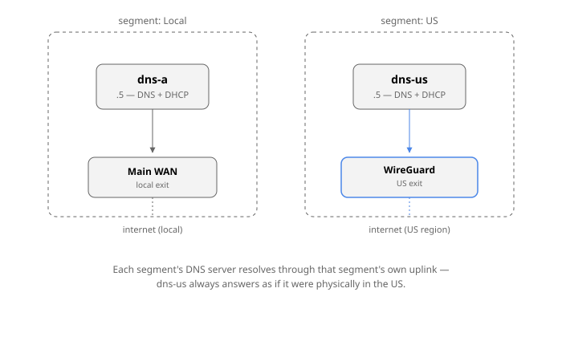

It's always DNS
It’s always DNS
Code: github.com/mabels/unified-dns-dhcp-chart
For a long time DNS on my network was whatever my router shipped with: MikroTik’s built-in cache, forwarding to 1.1.1.1 and 8.8.8.8. It worked — right up until anything needed local resolving, at which point it turned into one small trick after another to patch around the gaps.
The obvious next step was Pi-hole. Except Pi-hole wants to be the DNS server, which means moving it to its own IP, which means changing what DHCP hands out, which means Pi-hole then needs its own special configuration for this case and that case — and after enough of that I gave up and went back to the router’s cache. Then came the itch for DoH. My router at the time didn’t support it, and even once that got solved somewhere else, I ran into the same catch: I wanted to specify the forwarder by its symbolic hostname, not a bare IP, so TLS certificate validation actually meant something — and getting that right end-to-end was never quite clean.
The idea that escalated everything
Somewhere in there I had the idea of running multiple internal network
segments, each with its own SSID — something like BE-IN-THE-US — so that
switching “region” was as simple as switching which Wi-Fi you’re on,
instead of toggling a VPN by hand on every device. That one idea is what
broke everything else. Each of those segments needed its own DNS cache
server, bound into its own VRF, with DHCP that also worked correctly
inside that VRF — and that’s exactly where MikroTik’s configuration model
falls over. It’s not a licensing problem or a hardware problem, it’s a
“this appliance was never built to have more than one of itself” problem.
The reason a segment needs its own cache isn’t cosmetic: if you’re logically in a different region, your DNS has to resolve through that region, or the geo-DNS answers you get back point at servers for the wrong one entirely. A DNS server sitting outside a segment’s own routing context will happily resolve through the wrong uplink and hand back addresses for a country you’re not routing traffic to.

I looked at other router vendors at that point, assuming MikroTik was just unusually limited. They weren’t — OPNsense, VyOS, the rest, all hit the same wall in roughly the same place. I filed the wish with MikroTik and let it sit for the better part of a year. Nothing.
Going it alone: one DNS server per segment
Eventually I stopped waiting and reframed the whole thing: run completely
independent DNS servers, one per segment, each with everything else that
implies — DHCP creating both the forward zone (*.mydomain) and the
matching reverse zone (*.in-addr.arpa) automatically as leases are
handed out. And since I was building real infrastructure anyway, not just
a router feature, I decided to run it on my Kubernetes cluster.
The software choice took a while. dnsmasq was the obvious lightweight
default, but too simple and with no API to build anything further on top
of. What I actually wanted, on top of “lightweight, well-known, proven,”
was a UI that showed the last DHCP-assigned hostname/IP at a glance —
the single most useful thing when you’re onboarding a new IoT device and
need to find it right now. Nothing quite fit; Pi-hole in particular is
not a pleasant thing to run inside a container.
With Claude’s help I landed on a four-piece stack: Unbound as the
forwarding/caching resolver with DNSSEC validation, Knot as the
authoritative store for reverse zones, and Kea DHCP plus Kea DDNS
as the authoritative server for forward records. Getting all four running
on ARM took real effort, but it worked: one pod per segment with all four
containers, Multus handling the VLAN attachment so the pod got a real IP
out of the segment’s own range (.5, in my numbering), DHCP adjusted to
match.
The chicken-and-egg problem
It worked — until I noticed what I’d actually built. Running DNS on the main Kubernetes cluster means the cluster’s own boot sequence now depends on DNS that lives inside the cluster. Every reboot became a small gamble on whether everything would come back up in the right order.
The fix, at the time, was to move the whole stack off-cluster onto a dedicated Raspberry Pi — an 8 GB model turned out to be the minimum that would actually hold it. That solved the ordering problem, but introduced a new one: Knot’s authoritative store doesn’t like being rebooted, and after some power outages it just wouldn’t come back without manual intervention. I’d traded a boot-order gamble for a second machine to babysit, on top of the central VM host (TrueNAS, at the time).
It worked, but “worked” was doing a lot of lifting. The UI never got the attention it needed, metrics were scattered across four separate components instead of living anywhere central, and proper monitoring was — and still is — unsolved. The real test of “is DNS actually healthy” is a dedicated machine that boots, checks that DHCP, DNS, and routing all came up correctly, records that result somewhere, and only then switches over to collect it — and I never got around to building that. It’s still on the list.
Rethinking it: one central, resilient stack
The part I kept coming back to was that I didn’t want another standalone machine doing something this central to the network. That’s what sent me looking again, and that’s how I found Technitium DNS Server — a much nicer UI, real built-in statistics, and fast enough to start that I could run it from Proxmox and have it up very early in the boot sequence.
Technitium isn’t really designed to be driven entirely by automation across several independent network configurations without someone clicking through its UI — but with Claude’s help I found a way to make it work anyway. It costs one extra boot cycle just to extract the API key on first run, which is a fine trade for everything it replaces.
What came out of that is the unified-dns-dhcp Helm
chart: Technitium plus
a small set of sidecars (a Deno configurator that applies all DNS/DHCP
state through Technitium’s REST API, an optional metrics exporter),
running one StatefulSet per segment on the central Kubernetes cluster,
attached to each segment’s VLAN through Multus on a dedicated node. That
last part is what actually closes the loop from the earlier chicken-and-egg
problem: the Kubernetes cluster itself can be taken down for maintenance
without taking DNS down with it, because the node keeps whatever was
already running going through the reboot — and only reconciles back to
the cluster’s desired state once Kubernetes is back.
It’s not the last word on any of this — monitoring is still the open piece — but it’s the first version of this whole saga where DNS survives the thing that’s supposed to be running it going away for a while.